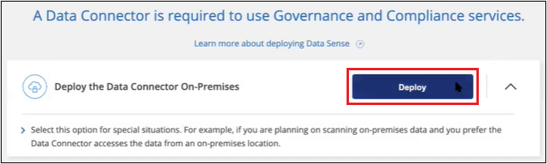

문서 변경 요청
문서 변경 요청 이 페이지 편집
이 페이지 편집 기여하는 방법 자세히 알아보기
기여하는 방법 자세히 알아보기인터넷에 액세스하지 않고 클라우드 데이터 센스를 내부에 구축할 수 있습니다
인터넷 액세스가 없는 사내 사이트의 호스트에 클라우드 데이터 센스를 배포하려면 몇 단계를 완료하십시오. 이러한 유형의 설치는 보안 사이트에 적합합니다.
참고: 또한 이 기능을 사용할 수 있습니다 "인터넷에 액세스할 수 있는 온프레미스 사이트에 데이터 센스를 구현합니다".
지원되는 데이터 소스
이러한 방식으로 설치할 경우("오프라인" 또는 "다크" 사이트라고도 함) 데이터 센스(Data Sense)는 사내 사이트에도 로컬인 데이터 소스의 데이터만 스캔할 수 있습니다. 현재 Data Sense는 다음과 같은 로컬 데이터 소스를 스캔할 수 있습니다.
-
온프레미스 ONTAP 시스템
-
데이터베이스 스키마
-
비NetApp NFS 또는 CIFS 파일 공유
-
S3(Simple Storage Service) 프로토콜을 사용하는 오브젝트 스토리지
매우 안전한 Cloud Manager 설치가 필요하지만 OneDrive 계정 또는 SharePoint 계정에서 로컬 데이터를 스캔하려는 특수한 상황에서는 Data Sense 오프라인 설치 프로그램을 사용하여 몇 개의 선택 끝점에 대한 인터넷 액세스를 제공할 수 있습니다. 을 참조하십시오 SharePoint 및 OneDrive 특별 요구 사항 를 참조하십시오.
데이터 센스를 어두운 사이트에 구축한 경우 현재 Cloud Volumes ONTAP, Azure NetApp Files, FSx for ONTAP, AWS S3 또는 Google Drive 계정을 스캔할 수 없습니다.
제한 사항
대부분의 데이터 감지 기능은 인터넷에 연결되지 않은 사이트에 구축할 때 작동합니다. 그러나 인터넷 액세스가 필요한 특정 기능은 지원되지 않습니다. 예를 들면 다음과 같습니다.
-
Microsoft Azure 정보 보호(AIP) 레이블 관리
-
특정 중요 정책에서 결과를 반환하는 경우 Cloud Manager 사용자에게 이메일 알림을 보냅니다
-
여러 사용자에 대한 Cloud Manager 역할 설정(예: 계정 관리자 또는 규정 준수 뷰어)
-
Cloud Sync를 사용하여 소스 파일 복사 및 동기화
-
사용자 피드백을 받는 중입니다
-
Cloud Manager에서 소프트웨어 업그레이드 자동화
Cloud Manager Connector와 데이터 센스 모두 새로운 기능을 사용하기 위해 정기적인 수동 업그레이드가 필요합니다. 데이터 감지 UI 페이지 하단에 데이터 감지 버전이 표시됩니다. 를 확인하십시오 "클라우드 데이터 감지 릴리스 정보" 각 릴리스의 새로운 기능과 해당 기능을 원하는지 여부를 확인합니다. 그런 다음 의 단계를 수행할 수 있습니다 데이터 감지 소프트웨어를 업그레이드하십시오.
빠른 시작
다음 단계를 따라 빠르게 시작하거나 나머지 섹션을 아래로 스크롤하여 자세한 내용을 확인하십시오.
오프라인 온-프레미스 사이트에 커넥터가 아직 설치되어 있지 않은 경우 "커넥터를 배포합니다" 이제 Linux 호스트에서
Linux 시스템이 를 충족하는지 확인합니다 호스트 요구 사항필요한 모든 소프트웨어가 설치되어 있고 오프라인 환경이 필요한 를 충족한다는 것을 나타냅니다 사용 권한 및 연결.
NetApp Support 사이트에서 Cloud Data Sense 소프트웨어를 다운로드하고 사용할 Linux 호스트에 설치 프로그램 파일을 복사합니다. 그런 다음 설치 마법사를 시작하고 화면의 지시에 따라 Cloud Data Sense 인스턴스를 구축합니다.
Cloud Manager에서 Cloud Data Sense를 통해 스캔하는 첫 번째 1TB의 데이터는 무료입니다. 이 시점 이후에 데이터를 계속 스캔하려면 NetApp의 BYOL 라이센스가 필요합니다.
Cloud Manager Connector를 설치합니다
오프라인 사내 사이트에 Cloud Manager Connector가 아직 설치되지 않은 경우 "커넥터를 배포합니다" 오프라인 사이트의 Linux 호스트
Linux 호스트 시스템을 준비합니다
Data Sense 소프트웨어는 특정 운영 체제 요구 사항, RAM 요구 사항, 소프트웨어 요구 사항 등을 충족하는 호스트에서 실행되어야 합니다. 다른 애플리케이션과 공유되는 호스트에서는 데이터 센스를 지원하지 않습니다. 호스트는 전용 호스트여야 합니다.
-
운영 체제: Red Hat Enterprise Linux 또는 CentOS 버전 8.0 또는 8.1
-
OS에서 Docker Engine을 설치할 수 있어야 합니다(예: 필요한 경우 _firewalld_service 사용 안 함).
-
-
디스크: 500GiB의 SSD 사용 가능 온/또는
-
100GiB를 On/OPT에서 사용할 수 있습니다
-
/var에서 400GiB를 사용할 수 있습니다
-
/tmp에 5GiB입니다
-
-
RAM: 64GB(스왑 메모리는 호스트에서 비활성화해야 함)
-
CPU: 16코어
CPU가 적고 RAM이 적은 시스템에 데이터 센스를 배포할 수 있지만 이러한 시스템을 사용할 때는 한계가 있습니다. 을 참조하십시오 "더 작은 인스턴스 유형 사용" 를 참조하십시오.
Data Sense를 설치하기 전에 호스트에 다음 소프트웨어를 설치해야 합니다.
-
Docker Engine 버전 19 이상 "설치 지침을 봅니다".
-
Python 3 버전 3.6 이상. "설치 지침을 봅니다".
Cloud Manager 및 Data Sense 사전 요구 사항을 확인합니다
Cloud Data Sense를 구축하기 전에 다음 사전 요구 사항을 검토하여 지원되는 구성이 있는지 확인하십시오.
-
Cloud Manager에 리소스를 구축하고 Cloud Data Sense 인스턴스에 대한 보안 그룹을 생성할 수 있는 권한이 있는지 확인합니다.
-
Cloud Manager Connector가 데이터 감지 인스턴스에 액세스할 수 있는지 확인합니다. Connector의 보안 그룹은 포트 443을 통해 데이터 감지 인스턴스 간에 인바운드 및 아웃바운드 트래픽을 허용해야 합니다.
이 연결을 통해 Data Sense 인스턴스를 구축할 수 있으며 규정 준수 및 거버넌스 정보를 볼 수 있습니다.
Cloud Manager에서 설치 진행률을 볼 수 있도록 포트 8080이 열려 있는지 확인합니다.
-
클라우드 데이터 센스를 계속 운영할 수 있는지 확인하십시오. 데이터를 지속적으로 스캔하려면 Cloud Data Sense 인스턴스가 켜져 있어야 합니다.
-
클라우드 데이터 센스에 대한 웹 브라우저 연결을 확인합니다. Cloud Data Sense를 사용하도록 설정한 후에는 사용자가 Data Sense 인스턴스에 연결된 호스트에서 Cloud Manager 인터페이스에 액세스해야 합니다.
Data Sense 인스턴스는 개인 IP 주소를 사용하여 인덱싱된 데이터에 다른 사용자가 액세스할 수 없도록 합니다. 따라서 Cloud Manager에 액세스하는 데 사용하는 웹 브라우저에는 해당 프라이빗 IP 주소에 연결되어 있어야 합니다. 이 연결은 Data Sense 인스턴스와 동일한 네트워크 내에 있는 호스트에서 발생할 수 있습니다.
SharePoint 및 OneDrive 특별 요구 사항
인터넷에 액세스할 수 없는 사이트에 Cloud Manager 및 Data Sense를 배포하는 경우, 몇 개의 선택 엔드포인트에 대한 인터넷 액세스를 제공하여 SharePoint 및 OneDrive 계정의 로컬 파일을 검색할 수 있습니다.
| 엔드포인트 | 목적 |
|---|---|
login.microsoft.com \graph.microsoft.com 으로 문의하십시오 |
Microsoft 서버와 통신하여 선택한 온라인 서비스에 로그인합니다. |
https://cloudmanager.cloud.netapp.com 으로 문의하십시오 |
NetApp 계정을 포함한 Cloud Manager 서비스와 통신합니다. |
이러한 외부 서비스에 처음 연결하는 동안에만 cloudmanager.cloud.netapp.com 에 액세스해야 합니다.
데이터 센스를 구축합니다
일반적인 구성의 경우 단일 호스트 시스템에 소프트웨어를 설치합니다. "여기에서 해당 단계를 확인하십시오".
페타바이트 단위의 데이터를 스캐닝할 대규모 구성의 경우 여러 호스트를 포함하여 추가적인 처리 성능을 제공할 수 있습니다. "여기에서 해당 단계를 확인하십시오".
일반 구성을 위한 단일 호스트 설치
오프라인 환경의 단일 사내 호스트에 Data Sense 소프트웨어를 설치할 때는 다음 단계를 따르십시오.
-
Linux 시스템이 를 충족하는지 확인합니다 호스트 요구 사항.
-
필수 소프트웨어 패키지 2개(Docker Engine 및 Python 3)를 설치했는지 확인합니다.
-
Linux 시스템에 대한 루트 권한이 있는지 확인합니다.
-
오프라인 환경이 필요한 를 충족하는지 확인합니다 사용 권한 및 연결.
-
인터넷 구성 시스템의 경우 에서 클라우드 데이터 감지 소프트웨어를 다운로드합니다 "NetApp Support 사이트". 선택해야 하는 파일의 이름은 * DataSense-offline-bundle-<version>.tar.gz * 입니다.
-
설치 프로그램 번들을 다크 사이트에서 사용할 Linux 호스트에 복사합니다.
-
호스트 시스템에서 설치 프로그램 번들의 압축을 풉니다. 예를 들면 다음과 같습니다.
tar -xzf DataSense-offline-bundle-v1.10.0.tar.gz필요한 소프트웨어와 실제 설치 파일 * cc_onprem_installer_<version>.tar.gz * 를 추출합니다.
-
Cloud Manager를 시작하고 * Data Sense * 탭을 클릭합니다.
-
Activate Data Sense * 를 클릭합니다.

-
구축 * 을 클릭하여 온프레미스 구축 마법사를 시작합니다.

-
deploy Data Sense on premises_dialog에서 제공된 명령을 복사하여 나중에 사용할 수 있도록 텍스트 파일에 붙여넣은 다음 * Close * 를 클릭합니다. 예를 들면 다음과 같습니다.
'SUDO./install.sh -a 12345-c 27AG75-t 2198qq—암막'
-
호스트 시스템에서 설치 파일의 압축을 풉니다. 예를 들면 다음과 같습니다.
tar -xzf cc_onprem_installer_1.10.0.tar.gz -
설치 프로그램에서 프롬프트가 표시되면 일련의 프롬프트에 필요한 값을 입력하거나 설치 프로그램에 명령줄 인수로 필요한 매개 변수를 제공할 수 있습니다.
프롬프트가 나타나면 매개 변수를 입력합니다. 전체 명령 입력: -
7단계:'SUDO./install.sh -a<account_id> -c<agent_id> -t<token>--darsite’에서 복사한 정보를 붙여 넣습니다
-
Connector 인스턴스에서 액세스할 수 있도록 Data Sense 호스트 시스템의 IP 주소 또는 호스트 이름을 입력합니다.
-
Data Sense 인스턴스에서 액세스할 수 있도록 Cloud Manager Connector 호스트 시스템의 IP 주소 또는 호스트 이름을 입력합니다.
또는 필요한 호스트 매개 변수 'sudo./install.sh -a <account_id> -c <agent_id> -t <token>--host <DS_host>--manager-host <cm_host>--no-proxy—dar사이트’를 제공하여 전체 명령을 미리 생성할 수 있습니다
변수 값:
-
ACCOUNT_ID= NetApp 계정 ID입니다
-
agent_id=커넥터 ID입니다
-
token= JWT 사용자 토큰
-
DS_HOST= Data Sense Linux 시스템의 IP 주소 또는 호스트 이름입니다.
-
cm_host= Cloud Manager Connector 시스템의 IP 주소 또는 호스트 이름입니다.
-
Data Sense 설치 프로그램은 패키지를 설치하고, 설치를 등록하고, Data Sense를 설치합니다. 설치는 10분에서 20분 정도 걸릴 수 있습니다.
호스트 시스템과 Connector 인스턴스 간에 포트 8080을 통해 연결되어 있는 경우 Cloud Manager의 Data Sense 탭에서 설치 진행률을 확인할 수 있습니다.
구성 페이지에서 로컬 을 선택할 수 있습니다 "온프레미스 ONTAP 클러스터" 및 "데이터베이스를 지원합니다" 선택합니다.
또한 가능합니다 "Cloud Data Sense에 대한 BYOL 라이센싱 설정" 현재 Digital Wallet 페이지에서 확인할 수 있습니다. 데이터 양이 1TB를 초과할 때까지 비용이 청구되지 않습니다.
대규모 구성을 위한 다중 호스트 설치
페타바이트 단위의 데이터를 스캐닝할 대규모 구성의 경우 여러 호스트를 포함하여 추가적인 처리 성능을 제공할 수 있습니다. 여러 호스트 시스템을 사용하는 경우 주 시스템을 _Manager node_라고 하며 추가 처리 능력을 제공하는 추가 시스템을 _Scanner nodes_라고 합니다.
오프라인 환경의 여러 사내 호스트에 Data Sense 소프트웨어를 설치할 때는 다음 단계를 따르십시오.
-
Manager 및 Scanner 노드의 모든 Linux 시스템이 을 충족하는지 확인합니다 호스트 요구 사항.
-
필수 소프트웨어 패키지 2개(Docker Engine 및 Python 3)를 설치했는지 확인합니다.
-
Linux 시스템에 대한 루트 권한이 있는지 확인합니다.
-
오프라인 환경이 필요한 를 충족하는지 확인합니다 사용 권한 및 연결.
-
사용하려는 스캐너 노드 호스트의 IP 주소가 있어야 합니다.
-
모든 호스트에서 다음 포트 및 프로토콜을 활성화해야 합니다.
포트 프로토콜 설명 2377
TCP
클러스터 관리 통신
7946
TCP, UDP
노드 간 통신
4789
UDP입니다
오버레이 네트워크 트래픽
50
ESP
암호화된 IPsec 오버레이 네트워크(ESP) 트래픽
111
TCP, UDP
호스트 간 파일 공유를 위한 NFS 서버(각 스캐너 노드에서 관리자 노드로 필요)
2049
TCP, UDP
호스트 간 파일 공유를 위한 NFS 서버(각 스캐너 노드에서 관리자 노드로 필요)
-
에서 1단계부터 8단계까지 수행합니다 "단일 호스트 설치" 관리자 노드에서.
-
9단계에서 설명한 것처럼 설치 관리자가 메시지를 표시하면 일련의 프롬프트에 필요한 값을 입력하거나 설치 프로그램에 명령줄 인수로 필요한 매개 변수를 제공할 수 있습니다.
단일 호스트 설치에 사용할 수 있는 변수 외에도 새 옵션 * -n<node_ip> * 를 사용하여 스캐너 노드의 IP 주소를 지정할 수 있습니다. 여러 노드 IP는 쉼표로 구분됩니다.
예를 들어, 이 명령은 3개의 스캐너 노드(sudo./install.sh -a <account_id> -c <agent_id> -t <token>--host <DS_host>--manager-host <cm_host> * -n <node_IP1>, <node_IP2>, <node_ip3> * — no-proxy-site)를 추가합니다
-
관리자 노드 설치가 완료되기 전에 스캐너 노드에 필요한 설치 명령이 대화 상자에 표시됩니다. 명령을 복사하여 텍스트 파일에 저장합니다. 예를 들면 다음과 같습니다.
'SUDO./node_install.sh -m 10.11.12.13 -t abcdef-1-3u69m1-1s35212’를 참조하십시오
-
켜짐 * 각 * 스캐너 노드 호스트:
-
Data Sense 설치 프로그램 파일(* cc_onpremise_installer_<version>.tar.gz *)을 호스트 컴퓨터에 복사합니다.
-
설치 프로그램 파일의 압축을 풉니다.
-
3단계에서 복사한 명령을 붙여 넣고 실행합니다.
모든 스캐너 노드에서 설치가 완료되고 관리자 노드에 연결되었으면 관리자 노드 설치도 완료됩니다.
-
Cloud Data Sense 설치 프로그램이 패키지 설치를 완료하고 설치를 등록합니다. 설치에는 15 ~ 25분이 소요될 수 있습니다.
구성 페이지에서 로컬 을 선택할 수 있습니다 "온프레미스 ONTAP 클러스터" 및 로컬 "데이터베이스를 지원합니다" 선택합니다.
또한 가능합니다 "Cloud Data Sense에 대한 BYOL 라이센싱 설정" 현재 Digital Wallet 페이지에서 확인할 수 있습니다. 데이터 양이 1TB를 초과할 때까지 비용이 청구되지 않습니다.
데이터 감지 소프트웨어를 업그레이드합니다
Data Sense 소프트웨어는 정기적으로 새로운 기능으로 업데이트되므로 정기적으로 새로운 버전을 확인하여 최신 소프트웨어와 기능을 사용하고 있는지 확인해야 합니다. 업그레이드를 자동으로 수행하기 위한 인터넷 연결이 없기 때문에 Data Sense 소프트웨어를 수동으로 업그레이드해야 합니다.
-
Data Sense 소프트웨어는 한 번에 하나의 주요 버전으로 업그레이드할 수 있습니다. 예를 들어, 버전 1.9.x가 설치되어 있는 경우 1.10.x로 업그레이드할 수 있습니다 몇 가지 주요 버전이 뒤쳐지면 소프트웨어를 여러 번 업그레이드해야 합니다.
-
온프레미스 커넥터 소프트웨어가 최신 버전으로 업그레이드되었는지 확인합니다. "커넥터 업그레이드 단계를 참조하십시오".
-
인터넷 구성 시스템의 경우 에서 클라우드 데이터 감지 소프트웨어를 다운로드합니다 "NetApp Support 사이트". 선택해야 하는 파일의 이름은 * DataSense-offline-bundle-<version>.tar.gz * 입니다.
-
Data Sense가 설치된 Linux 호스트에 소프트웨어 번들을 복사합니다.
-
호스트 시스템에서 소프트웨어 번들의 압축을 풉니다. 예를 들면 다음과 같습니다.
tar -xvf DataSense-offline-bundle-v1.10.0.tar.gz그러면 설치 파일 * cc_onpremise_installer_<version>.tar.gz * 가 추출됩니다.
-
호스트 시스템에서 설치 파일의 압축을 풉니다. 예를 들면 다음과 같습니다.
tar -xzf cc_onprem_installer_1.10.0.tar.gz그러면 업그레이드 스크립트 * start_darsite_upgrade.sh * 와 필요한 타사 소프트웨어가 추출됩니다.
-
호스트 시스템에서 업그레이드 스크립트를 실행합니다. 예를 들면 다음과 같습니다.
start_darksite_upgrade.sh
Data Sense 소프트웨어가 호스트에서 업그레이드됩니다. 업데이트는 5분에서 10분 정도 소요될 수 있습니다.
매우 큰 구성을 스캔하기 위해 여러 호스트 시스템에 Data Sense를 구축한 경우 스캐너 노드에는 업그레이드가 필요하지 않습니다.
데이터 감지 UI 페이지 하단에 있는 버전을 확인하여 소프트웨어가 업데이트되었는지 확인할 수 있습니다.